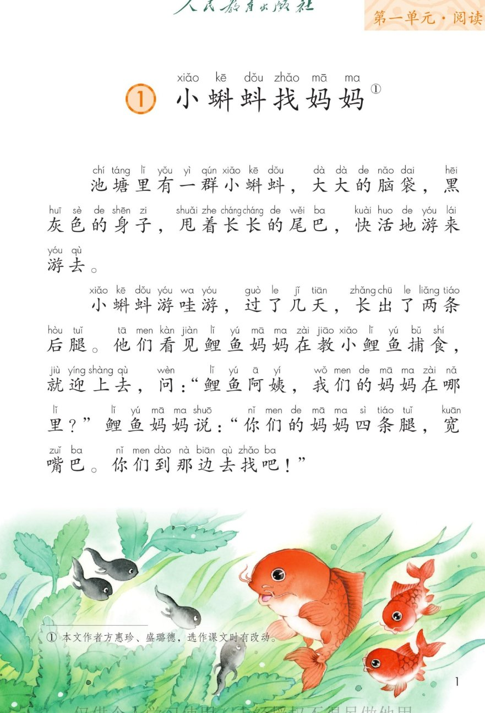
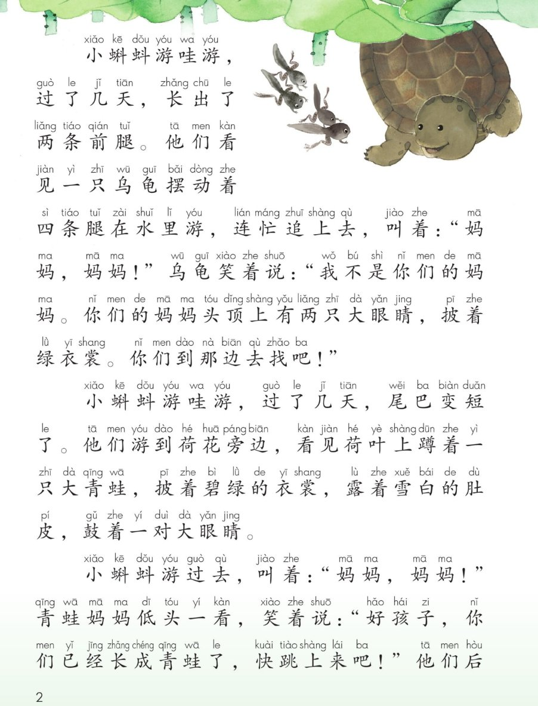
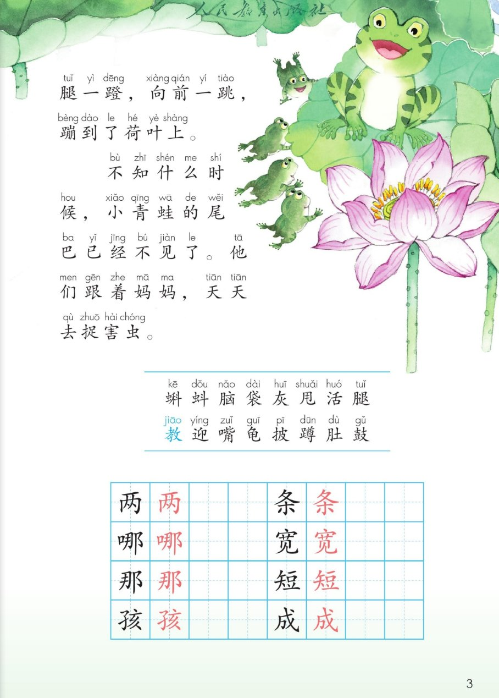

×
🔊 手机听不到声音怎么办？照这 3 步做
① 用
Edge 浏览器打开
www.jeepsh.cn（在微信里打开的点右上角「⋯ → 在浏览器打开」；没装 Edge 就到应用商店搜「Edge」安装）。
② 应用商店搜
「讯飞语记」安装 → 打开它 →
通用设置 → 语音合成设置 → 打开
「合成系统接口」和
「全局生效」两个开关 → 再选一个
中文发音人。
③ 系统语言设为
简体中文，点「
播放」试听能说中文后，
彻底关闭浏览器再重开（后台划掉），回到课件点读就有声音。
→ 打开声音自检
🐸 第 1 课《小蝌蚪找妈妈》· 有声图文带读
统编版语文二年级上册 · 第一单元·阅读 · 课本第 1~4 页 · 作者：方惠珍、盛璐德（选作课文时有改动）
课文 6 个自然段
会认字 16
会写字 8
听写词 10
近义词 4 组
深入理解 8 题
本课本领 按顺序讲故事
🎧 五步学（可随时点任意一句、一个字、一个词单独听）：
① 听读课文——一句一句读，读到哪一句哪一句发光；开「跟读」后读完一句留时间让你自己读。
② 学字词——16 个会认字、8 个会写字（含书写提示），点一个读一个。
③ 词语·听写·造句——听写 10 个词（读两遍→你写→报答案→听示范句），再听 4 组近义词辨析。
④ 深入理解——8 道题（认知 / 理解 / 运用 / 拓展），开放题答案不唯一，先想后看。
⑤ 讲故事·分角色——按顺序讲小蝌蚪长大，再分角色朗读课文。
① 听读课文（点哪一句，读哪一句）点段前的 ①②③ 听整段
注音只标本课要认、要写的字，读音来自课本第 3 页生字表
🎤 朗读要求（老师标准）
① 读准字音，不添字、不漏字、不回读；
② 逗号稍停，句号停得长一点；
③ 问句读出问的语气（句末往上扬）；
④ 人物的话读出心情：鲤鱼妈妈亲切，小蝌蚪着急，青蛙妈妈温柔；
⑤ “快活地”“笑着说”要读出语气来。
①池塘里有一群小蝌蚪，大大的脑袋，黑灰色的身子，甩着长长的尾巴，快活地游来游去。
②小蝌蚪游哇游，过了几天，长出了两条后腿。他们看见鲤鱼妈妈在教小鲤鱼捕食，就迎上去，问：“鲤鱼阿姨，我们的妈妈在哪里？”鲤鱼妈妈说：“你们的妈妈四条腿，宽嘴巴。你们到那边去找吧！”
③小蝌蚪游哇游，过了几天，长出了两条前腿。他们看见一只乌龟摆动着四条腿在水里游，连忙追上去，叫着：“妈妈，妈妈！”乌龟笑着说：“我不是你们的妈妈。你们的妈妈头顶上有两只大眼睛，披着绿衣裳。你们到那边去找吧！”
④小蝌蚪游哇游，过了几天，尾巴变短了。他们游到荷花旁边，看见荷叶上蹲着一只大青蛙，披着碧绿的衣裳，露着雪白的肚皮，鼓着一对大眼睛。
⑤小蝌蚪游过去，叫着：“妈妈，妈妈！”青蛙妈妈低头一看，笑着说：“好孩子，你们已经长成青蛙了，快跳上来吧！”他们后腿一蹬，向前一跳，蹦到了荷叶上。
⑥不知什么时候，小青蛙的尾巴已经不见了。他们跟着妈妈，天天去捉害虫。
🤔 想一想（点我可跳过）
课本的样子（点一张图，听读这一页）整页点读

第 1 页 · 课题与开头

第 2 页 · 遇乌龟、见青蛙

第 3 页 · 结尾与生字表
📖 人教版《语文》二年级上册 · 课本第 1~4 页 · 图片仅供个人学习，版权归人民教育出版社所有
② 会认字（16 个）点一个字，听读音、词语和课文里的句子
② 会写字（8 个）结构、部首、笔画与书写提示为通用规范，供参考，以教材和老师的指导为准
两
liǎng
两条 · 两个
7 画 · 独体
框要宽扁，里面写小
条
tiáo
两条 · 面条
7 画 · 上下（木）
上扁下长，横要托住
哪
nǎ
哪里 · 哪个
9 画 · 左右（口）
左窄右宽，口要小
宽
kuān
宽嘴巴 · 宽大
10 画 · 上下（宀）
宝盖要宽，钩要舒展
那
nà
那边 · 那个
6 画 · 左右（阝）
左窄长，右耳竖直
短
duǎn
变短 · 长短
12 画 · 左右（矢）
左窄右宽，末横要长
孩
hái
孩子 · 女孩
9 画 · 左右（子）
子旁横变提，右紧凑
成
chéng
长成 · 成长
6 画 · 独体（戈）
斜钩要长，撇要舒展
③ 读一读，记一记（课后题）点一行，听读这一组词语
袋脑袋 口袋 袋子 袋鼠
活快活 生活 活动 活力
迎欢迎 迎接 迎风 迎面
③ 听写（10 个词）读两遍 → 你在纸上写 → 报答案 → 听示范句
准备听写 · 共 10 个词
○ ○ ○
点下面的「开始听写」，听到一个词就写一个词。
③ 听写的词 · 造句示范点词听读，点句子听示范句，再自己说一句
1脑袋课后词语
示范句：小蝌蚪大大的脑袋，黑灰色的身子。
✏️ 我也能说：谁 + 长着怎样的脑袋
2口袋课后词语
示范句：我的口袋里装着一块小橡皮。
✏️ 我也能说：谁的口袋里 + 装着什么
3快活课后词语
示范句：小鱼在水里快活地游来游去。
✏️ 我也能说：谁 + 在哪里 + 快活地做什么
4生活课后词语
示范句：小蝌蚪生活在池塘里。
✏️ 我也能说：谁 + 生活在哪里
5欢迎课后词语
示范句：我们鼓掌欢迎新同学。
✏️ 我也能说：谁 + 怎样 + 欢迎谁
6迎接课后词语
示范句：爸爸到车站去迎接奶奶。
✏️ 我也能说：谁 + 到哪里 + 迎接谁
7两条会写字
示范句：小蝌蚪长出了两条后腿。
✏️ 我也能说：两条 + 什么
8宽大会写字
示范句：青蛙妈妈有一张宽大的嘴巴。
✏️ 我也能说：什么 + 很宽大
9孩子会写字
示范句：青蛙妈妈说：“好孩子，你们已经长成青蛙了。”
✏️ 我也能说：谁 + 是好孩子
10成长会写字
示范句：小蝌蚪一天天成长，长成了小青蛙。
✏️ 我也能说：谁 + 在谁的关心下 + 成长
③ 近义词辨析（4 组）相同点 / 不一样在哪 / 各造一句
快活 — 快乐
相同：都表示高兴。
不一样：快活常说“快活地做什么”，有活泼、爱动的意思；快乐只说心里高兴。
快活：小鸟在树上快活地跳来跳去。
快乐：今天是我的生日，我特别快乐。
迎上去 — 追上去
相同：都是朝别人过去。
不一样：迎上去是对方朝我来，我主动上前，面对面；追上去是对方在前面，我在后面赶。
迎上去：看见老师走过来，我迎上去问好。
追上去：他跑得太快了，我赶紧追上去。
连忙 — 赶紧
相同：都是快、马上就做。
不一样：连忙是紧接着、马上就做；赶紧是抓紧时间、别晚了。
连忙：听见妈妈叫我，我连忙答应。
赶紧：天要下雨了，赶紧回家吧。
天天 — 每天
相同：都是每一天，一次也不落下。
不一样：天天是口语，更亲切；每天常用在句子前面，更正式一点。
天天：小青蛙天天跟着妈妈去捉害虫。
每天：我每天早上都要读书。
③ 词语拓展（说一说，记一记）
数量词一群小蝌蚪 两条后腿 一只乌龟 一只大青蛙 一对大眼睛
颜色词黑灰色 碧绿 雪白
…来…去游来游去 走来走去 飞来飞去 跑来跑去
写样子大大的脑袋 长长的尾巴 碧绿的衣裳 雪白的肚皮
反义词长—短 大—小 黑—白
④ 深入理解（8 题 · 先想后看）标「答案不唯一」的题，说得有道理都对
认知小蝌蚪先长出来的是前腿还是后腿？
看解析
🤔 想一想
解析：
先长后腿，再长前腿——课文两次都说“过了几天”，是按时间顺序写的。
💡 读故事留意“过了几天”这样的时间词，它能帮你排出先后顺序
认知鲤鱼妈妈和乌龟，分别是怎么描述青蛙妈妈的？
看解析
🤔 想一想
解析：
鲤鱼妈妈：四条腿，宽嘴巴。
乌龟：头顶上有两只大眼睛，披着绿衣裳。
💡 每问一次路，就多知道一点妈妈的样子，最后才认出来
理解小蝌蚪为什么会把乌龟当成妈妈？
看解析
🤔 想一想
解析：
对上的地方：乌龟四条腿，也在水里游 → 符合鲤鱼妈妈说的“四条腿”。
对不上的地方：没有宽嘴巴，身上没有绿衣裳，头顶没有两只大眼睛。
🌈 看特点要看全，只盯着一点就会认错
理解课文里三次写“小蝌蚪游哇游，过了几天”，这样写有什么好处？
看解析
🤔 想一想
解析（说出一点就很好）：
① 时间：说明小蝌蚪是一天天慢慢长大的。
② 好听：三次写法一样，读起来有节奏，像儿歌。
③ 连贯：把三次遇见连起来，故事一步一步往前走。
🌈 答案不唯一，说得有道理都对
理解小蝌蚪一开始为什么不认识自己的妈妈？
看解析
🤔 想一想
解析：
没见过：从小就没见过妈妈，只能听别人一点点描述。
长得不一样：那时他们是大脑袋、长尾巴，和青蛙完全两个样。
🌈 答案不唯一，能说出自己的理解就很好
运用用“先……再……接着……最后……”讲讲小蝌蚪长成青蛙的过程。
看解析
🤔 想一想
参考答案：
先：甩着长长的尾巴在水里游；再：长出两条后腿。
接着：又长出两条前腿，尾巴变短；最后：尾巴不见，长成小青蛙。
💡 讲故事用上顺序词，别人一听就明白
🌈 答案不唯一，顺序说清楚、句子说通顺就很好
运用从“披着、鼓着、露着、甩着”里选一个，说一句话。
看解析
🤔 想一想
参考答案（四选一即可）：
披着：妹妹披着一件红色的小斗篷。
鼓着：小猫鼓着一双圆圆的眼睛看着我。
露着：弟弟笑起来露着两颗小白牙。甩着：小狗甩着尾巴跑过来。
🌈 答案不唯一，句子完整通顺就好
拓展小青蛙天天跟着妈妈去捉害虫，你想对它说些什么？
看解析
🤔 想一想
参考答案（三种思路，任选一种）：
夸一夸：小青蛙，你真棒，天天捉害虫，保护了庄稼。
表个态：谢谢你，我会保护青蛙，不捉它们、不乱扔垃圾。
说成长：你们一天天长大，还能帮农民伯伯捉害虫，真了不起。
🌈 答案不唯一，说清“想说什么 + 为什么”就是完整的一段话
⑤ 按顺序讲故事（课后题：按顺序连起来，再讲故事）
💬 讲故事支架：先甩着长尾巴 → 再长后腿 → 接着长前腿、尾巴变短 → 最后尾巴不见，长成青蛙。
⑤ 分角色朗读（课后题：分角色朗读课文）点一个角色，听他（她）说的话
🐸 小蝌蚪
“鲤鱼阿姨，我们的妈妈在哪里？”
“妈妈，妈妈！”
💬 要读出着急、有礼貌的语气
🐟 鲤鱼妈妈
“你们的妈妈四条腿，宽嘴巴。你们到那边去找吧！”
💬 要读出亲切、耐心的语气
🐢 乌龟
“我不是你们的妈妈。你们的妈妈头顶上有两只大眼睛，披着绿衣裳。你们到那边去找吧！”
💬 要读出温和、笑着的语气
🐸 青蛙妈妈
“好孩子，你们已经长成青蛙了，快跳上来吧！”
💬 要读出温柔、高兴的语气
📖 旁白
“池塘里有一群小蝌蚪……”
💬 要读得清楚、平稳，像在讲故事